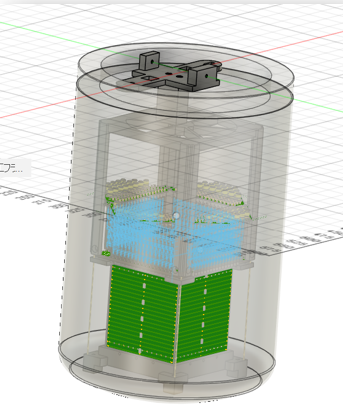
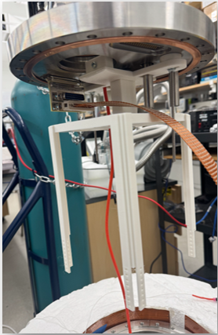
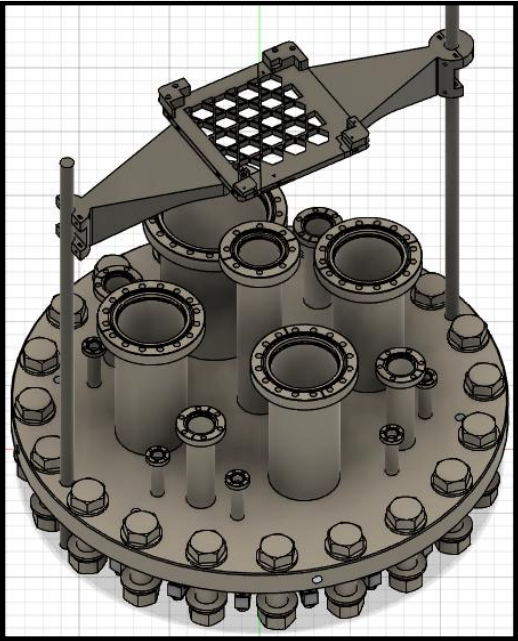
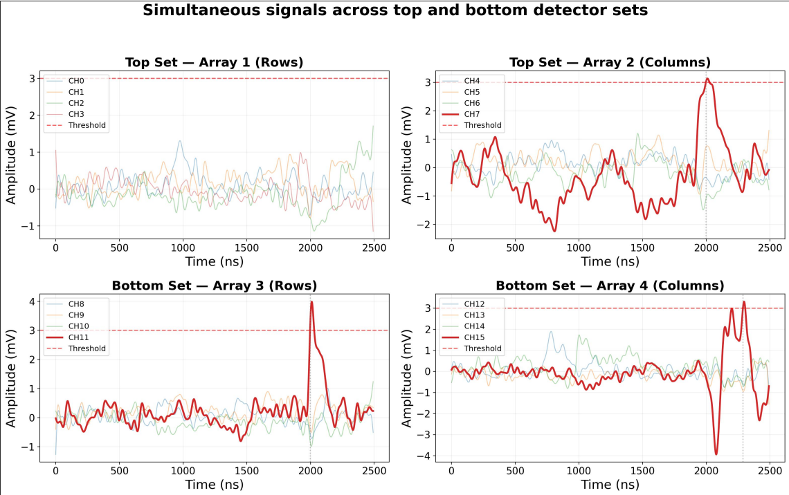
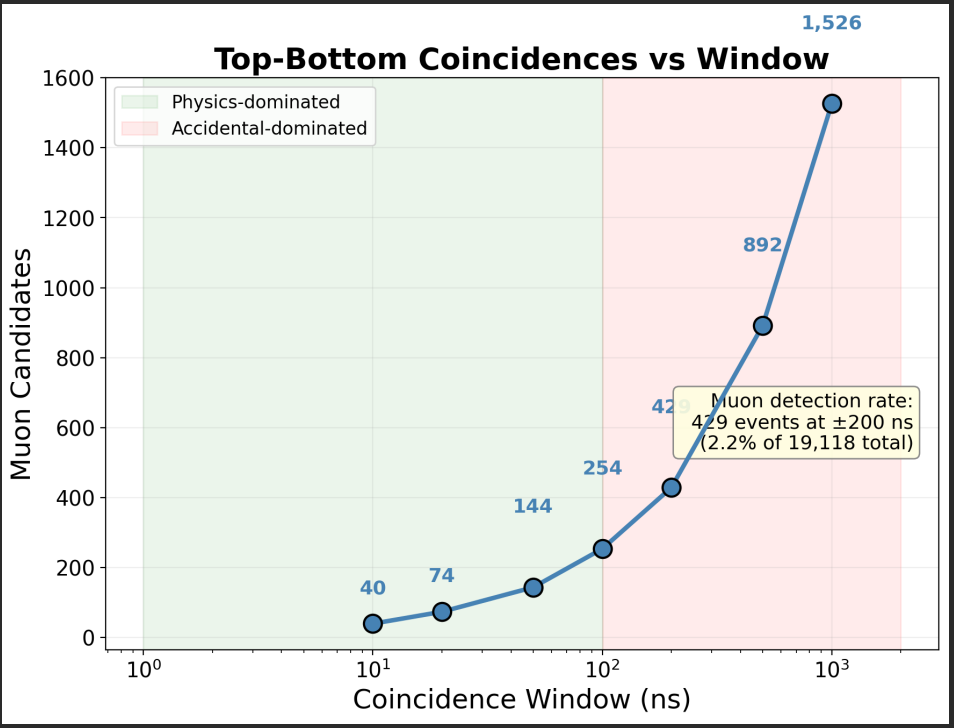
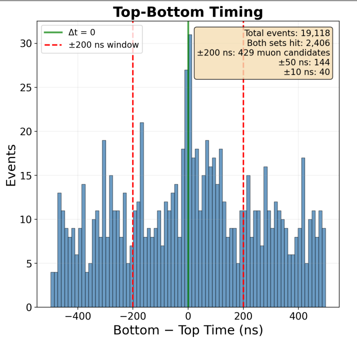
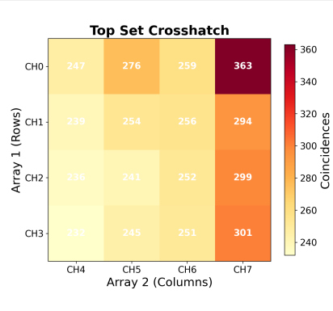
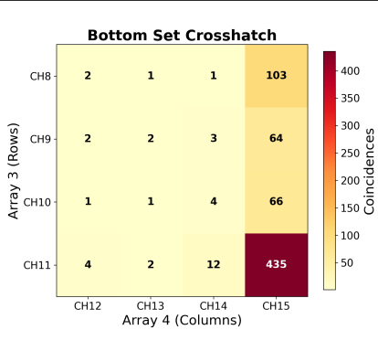

I joined the Aramaki Lab after taking Multi-Messenger Astrophysics with Professor Aramaki. The lab needed a mechanical engineer, and I've been contributing to the GRAMS (Gamma-Ray and AntiMatter Survey) experiment since, working on both mechanical design and data analysis.
Dark matter constitutes ~27% of the universe but has never been directly detected. The GRAMS experiment searches for dark matter signatures using a Liquid Argon Time Projection Chamber (LArTPC). Cosmic ray muons bombard Earth at ~1 per cm²/min and can pass through the TPC, mimicking the signals GRAMS is designed to detect. Without a reliable veto, these background events contaminate the data.
Phase 1
Before the planned flight in May 2025, the team needed to conduct routine tests to ensure reliable data acquisition, environmental control, and proper heat transfer. This required immersing the TPC in a liquid argon chamber at the lab — but no mounting solution existed to do so safely.
As the team's mechanical engineer, I designed and 3D printed a component that could interface securely with the flange of the liquid argon chamber, avoid interference with surrounding tubes and sensitive components, and hold the delicate detector with enough stability to prevent positional shifts that could compromise data quality.

CAD model of the TPC holder
The design required many iterations — little existing CAD was available to reference, and significant trial and error was needed to achieve correct fits and tolerances. I took ownership of weekly prototyping, gaining hands-on experience with rigorous 3D printer maintenance and troubleshooting.

The implemented TPC holder in use at the Aramaki Lab — still in active use today
Phase 2
Constructed plastic scintillator paddles wrapped in Teflon and sealed for light-tightness. SiPMs coupled to each paddle convert scintillation photons to voltage pulses.
Engineered a fully 3D-printed modular mounting system to suspend dual scintillator arrays at a fixed 1-meter height above the LArTPC. The design comprises a split retainer base, gusseted support arms, and adjustable collar clamps interfacing with the chamber flange, enabling precise and repeatable detector alignment while remaining fully adjustable for laboratory use.

3D-printed modular mounting system for dual scintillator arrays
Identified poor signal-to-noise ratio caused by ground loops. Implemented copper mesh grounding scheme and unified cable shielding. Rise times improved from ~100 ns to 5 ns.
When scintillation paddles on opposite sides of the detector fire at the same time, we can identify through-going muons. From 19,118 events, 429 muon candidates were identified at ±200 ns coincidence window, with 40 events within ±10 ns.

Muon candidate event showing simultaneous signals on 3 of 4 arrays with Δt = 0 ns

Coincidence count scaling with window size, demonstrating separation of true muon signals from accidental background
Analyzed 1M+ cosmic muon events using Python, achieving Landau distribution fitting with MPV at 7.1 mV. Top detector crosshatch shows uniform spatial response (247–363 coincidences per tile).

Top-bottom timing distribution histogram

Top detector crosshatch — coincidences per tile

Bottom detector crosshatch — coincidences per tile
Set per-channel trigger thresholds to normalize rates across all pixels. Detailed bias voltage study per paddle. Integrate veto system with GRAMS LArTPC for lab-scale testing.